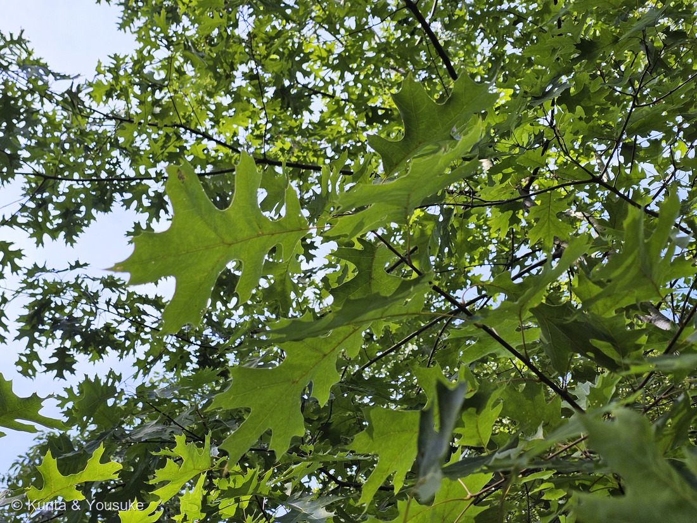
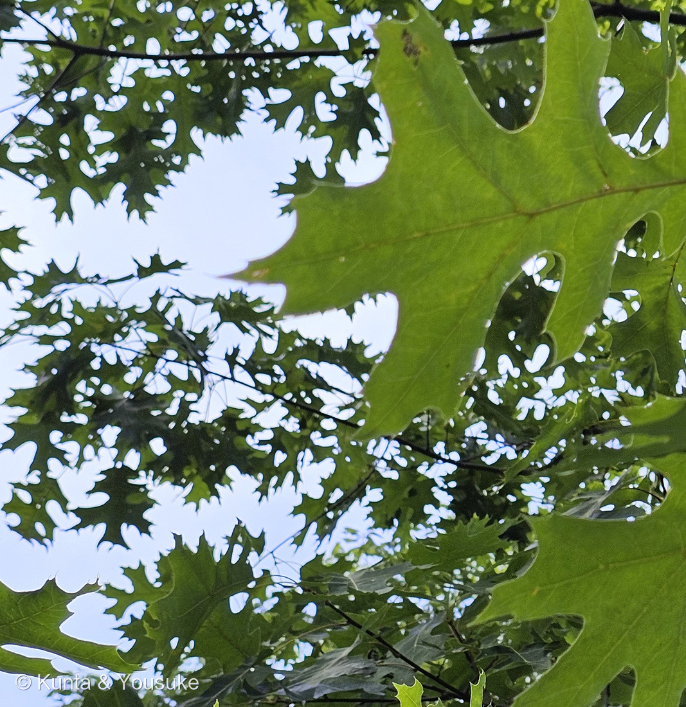
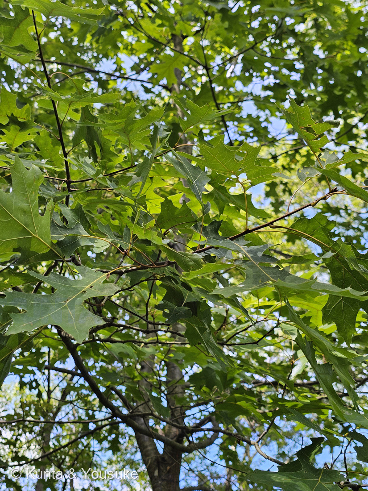
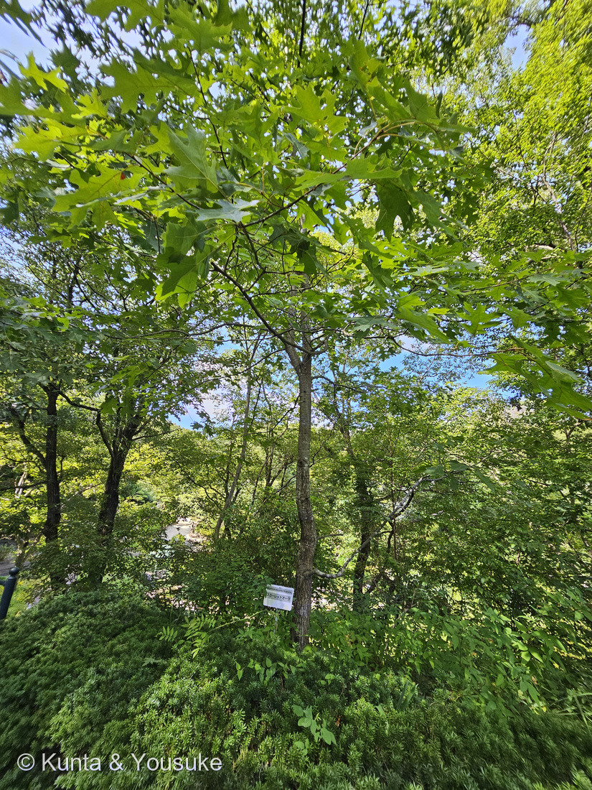

地図を読み込んでいるよ…
🔍 写真も地図も、押しているあいだ拡大して見られるよ（スマホは指を置いてすこし待ってね）。
🌍 の地図＝この子がもともと自生している場所を緑に。北アメリカの中部から東部。アメリカ合衆国のメイン州南部から西はウィスコンシン州・ミシガン州・ミズーリ州まで、南はルイジアナ州・アラバマ州・ジョージア州まで。
⭐ふるさとは北アメリカの中部から東部だよ。英語版Wikipediaは「from southern Maine west to Wisconsin, Michigan and Missouri, and south as far as Louisiana, Alabama, and Georgia（メイン州南部から西はウィスコンシン・ミシガン・ミズーリまで、南はルイジアナ・アラバマ・ジョージアまで）」と書いている。⚠地図はアメリカ全体が塗られてしまうけれど、実際は「東半分」だと思って見てね。⭐⭐「オーク」の本場は北アメリカ——とくにレッドオークのなかま（Lobatae 節）は北アメリカ・中央アメリカ・南アメリカ北部が中心（同・Oak）。⭐⭐⭐いっぽう日本のカシ・ナラ・カシワも同じコナラ属＝オークは北半球にひろく散らばっている、約500種の大きな一族なんだ。⭐この子が日本にいるのは、園が植えたから——秋の紅葉が真っ赤で人気の公園木だよ。
⚠ 地図は国（日本と中国だけ県・省）までしか塗れないから、ほんとうの分布より広く見えていることがあるよ。地図はだいたいの場所。正確なところは、上の文を見てね。
スカーレットオーク
Quercus coccinea Muenchh.
英名 scarlet oak（緋色のオーク）
ブナ科 · Fagaceae（コナラ属・レッドオーク節 Lobatae）── ⭐図鑑ではじめてのブナ科＝91科目。⭐⭐ブナ目 Fagales は087 ヤマモモでもう来ていたのに、目の名のもとになった科は、これがはじめて
燻太さんの一言「聞き馴染みのない名前の木だけど、この子はオークの仲間？ 葉っぱはトゲトゲしたカシワって感じ」── 仲間どころかオークそのもの。しかも「トゲトゲしたカシワ」で、属の中の分かれ目を言い当てていたよ
⭐⭐⭐⭐⭐ 燻太さんの問い ──「この子はオークの仲間？」
- ⭐⭐⭐答えは「仲間どころか、オークそのもの」。——「オーク」というのは、コナラ属（Quercus）の英名なんだ。⭐英語版Wikipedia「An oak is a hardwood tree or shrub in the genus Quercus of the beech family（オークとは、ブナ科コナラ属の硬い木の樹木または低木のこと）」。⭐世界に約500種。
- ⭐⭐だから「オークの仲間？」の答えはイエス——⭐というより、この子はオークと呼ぶしかない子だよ。
- ⭐⭐⭐⭐そして、もうひとつ。——日本のカシもナラもカシワも、ぜんぶ Quercus。⭐つまりみんなオークなんだ。⭐⭐「オーク」を家具の木の名前だと思っていると見えないけれど、神社のカシも、里山のコナラも、柏餅のカシワも、英語で言えばみんな oak。
⭐⭐⭐⭐⭐ 「トゲトゲしたカシワ」── 燻太さんは、属の中の分かれ目を言い当てていた
⭐⭐⭐ 燻太さんの「葉っぱはトゲトゲしたカシワって感じ」。——⭐⭐この短い一言に、コナラ属の二大グループが両方入っていたんだ。
⭐ コナラ属は、大きく二つに分かれる（英語版Wikipedia・Oak）。
- ホワイトオーク（Quercus 節） ── 「Leaf lobes are usually rounded」「mostly lack a bristle on their lobe tips（葉の裂片はふつう丸く、先に剛毛が無い）」／どんぐりは1年で熟す。⭐日本のカシワ・コナラ・ミズナラはこちら。
- レッドオーク（Lobatae 節） ── 「Leaves typically have sharp lobe tips, with spiny bristles at the lobe（葉の裂片の先はとがっていて、トゲのような剛毛がある）」／どんぐりは18か月かけて熟す。⭐スカーレットオークはこちら。
⭐⭐⭐⭐ つまり ──「カシワ」はホワイトオーク側の代表で、「トゲトゲ」はレッドオーク側の目じるし。⭐燻太さんは、属の中でいちばん大きな分かれ目の両側を、ひとつの言葉に入れていたことになる。
- ⭐⭐⭐写真②で、その診断形質が数えられるよ。——英語版Wikipediaの Quercus coccinea は「seven lobes, and deep sinuses between the lobes. Each lobe has 3–7 bristle-tipped teeth（裂片は7つ、そのあいだの切れこみは深い。それぞれの裂片に3〜7個の、先が剛毛になった歯がある）」。
- ⭐⭐写真②の大きな葉を見て。——裂片が7つ、切れこみはCの字のように深く、どの先にも細いトゲがついている。⭐空を透かして見ると、トゲの一本一本まで見えるよ。
- ⭐葉の大きさは「7〜17cm×8〜13cm」（同）。⭐カシワの葉は「長さ10〜30cmの倒卵形から広卵形で大きく、葉縁に沿って波状の大きな鋸歯がある」（日本語版Wikipedia）＝⚠カシワのほうが大きくて、切れこみは浅く、先は丸い。
この植物のこと ── 91科目・やっと来た「ブナ科」
- ブナ科コナラ属の落葉高木。⭐⭐図鑑ではじめてのブナ科＝91科目だよ。
- ⭐⭐⭐ここが224 センノウのときとそっくりな話で。——図鑑にはブナ目の子がもういた（087 ヤマモモ＝ヤマモモ科）。⭐なのに、目の名前のもとになった「ブナ科」だけが、いなかった。⭐⭐やっと名の主が来てくれた。
- ⭐ふるさとは北アメリカの中部から東部（英語版Wikipedia「from southern Maine west to Wisconsin, Michigan and Missouri, and south as far as Louisiana, Alabama, and Georgia」）。⭐高さはふつう5.5〜7.3m、大きいものは約30m（同）。
- ⭐⭐名前のとおり、秋に真っ赤になる。——「Scarlet oak is sometimes planted as an ornamental tree, popular for its bright red fall color（観賞用に植えられることがあり、鮮やかな赤い紅葉で人気がある）」（同）。⏳下の節へ。
- ⭐⭐どんぐりは2シーズンかけて熟す（同「about two seasons」）。卵形で、長さ17〜31mm、幅7〜13mm。⭐レッドオーク節の「18か月」が、そのまま出ているね。
⭐⭐⭐ 同定について ── 名札と、燻太さんの証言と、診断形質
- 園の名札＝「Quercus coccinea Muenchh.／スカーレットオーク」。⭐学名と和名だけの短い札だよ。
- ⭐⭐でも今回は、名札だけに頼っていない。——⭐レッドオーク節の診断形質（裂片の先の剛毛）を、写真②で自分の目で確かめた。⭐⭐087 ヤマモモで決めた「合っている証拠を数えるのではなく、他を排除できるかで考える」の実践だよ——「深く切れこんだ葉」だけならカエデにもあるけれど、裂片の先の剛毛はレッドオーク節のものだから。
- ⚠⚠そして、大事な訂正がひとつ。——ぼくは同じ時刻に撮られた別の木の写真（幹と名札、細かい鋸歯の葉）も、この子のものだと思いかけていた。⭐燻太さんが「この4枚がスカーレットオークのものだよ」と教えてくれて、まちがえずにすんだ。⭐⭐088 イキシアで教わった「写真に写っていなくても、燻太さんが現場で見たことは一次資料」を、また助けてもらった形だね。
- ⭐命名者の「Muenchh.」はオットー・フォン・ミュンヒハウゼン（1716–1774）。ドイツの植物学者で、ゲッティンゲン大学の総長、リンネの文通相手。いくつものオークをリンネ式で命名した人。⚠あの「ほら吹き男爵」ミュンヒハウゼンとの関係は、ぼくが読めた出典では確かめられなかったよ。
- ⚠名札だけを大写しにした写真は公開していない（200のルール）。⭐④には名札が小さく写るけれど、木ぜんたいを見せたいのでそのままにした（219のルール／学名と和名だけの短い札）。
⏳⭐⭐ 秋の約束に、もう一人
⭐ この子の名前は、まだ半分しか見ていないんだ。
- ⭐⭐⭐scarlet＝緋色。——この葉が、秋には真っ赤になる。⭐いま見ているのは、名前になっていないほうの季節なんだ。
- ⭐⭐図鑑には「秋にもう一度この園へ行く」という約束がもうある（206 ワタの綿がはじけるところ／207 ヘチマがたわしになるところ／212 カボチャ／215 オオオニバスの花）。⭐そこに、この子が加わったよ。
- ⏳もうひとつ、どんぐり。——⭐レッドオーク節は18か月かけて実らせるから、夏のいまでも1年目の小さなどんぐりが枝についているかもしれない。⚠この写真では見つけられなかった。⏳次に行ったら、枝を見上げてさがしてみてね。
- ⭐落ち葉も宿題。——⭐⭐1枚ひろって、裂片とトゲを数えて、写真②と見くらべよう。⭐そしてカシワの葉とも並べたいな。
参考：Wikipedia (English)・Quercus coccinea（the scarlet oak／section Lobatae／seven lobes, and deep sinuses between the lobes. Each lobe has 3–7 bristle-tipped teeth／7–17 cm long and 8–13 cm broad／The leaves turn a vibrant scarlet during autumn／acorns mature ... about two seasons／ovate, 7–13 millimetres broad and 17–31 mm long／around 5.5–7.3 metres ... maximum height is approximately 30 m／from southern Maine west to Wisconsin, Michigan and Missouri, and south as far as Louisiana, Alabama, and Georgia／Scarlet oak is sometimes planted as an ornamental tree, popular for its bright red fall color）／Wikipedia (English)・Oak（An oak is a hardwood tree or shrub in the genus Quercus of the beech family／approximately 500 species／White Oaks (Section Quercus): Leaf lobes are usually rounded ... mostly lack a bristle on their lobe tips ... Acorns mature in one year／Red Oaks (Section Lobatae): Leaves typically have sharp lobe tips, with spiny bristles at the lobe ... Acorns mature in 18 months）／Wikipedia・カシワ（おまけ。Quercus dentata／ブナ科コナラ属の落葉高木／長さ10 - 30cmの倒卵形から広卵形で大きく、葉縁に沿って波状の大きな鋸歯がある／枯れた葉は褐色に変わり、その多くは春まで枝についたまま新芽が出るまで落葉せずに残っている／端午の節句の柏餅を包む葉としても知られる／ドングリはクヌギに似た卵球形で、長さ15 - 20mm）／Wikipedia (English)・Otto von Münchhausen（11 June 1716 – 13 July 1774／a German botanist／Chancellor of University of Göttingen／a correspondent of Linnaeus／He named several species of oaks by the Linnean system）／⭐広島市植物公園の名札「Quercus coccinea Muenchh.／スカーレットオーク」（⚠名札だけの写真は公開せず、出典として引くだけにしてある）